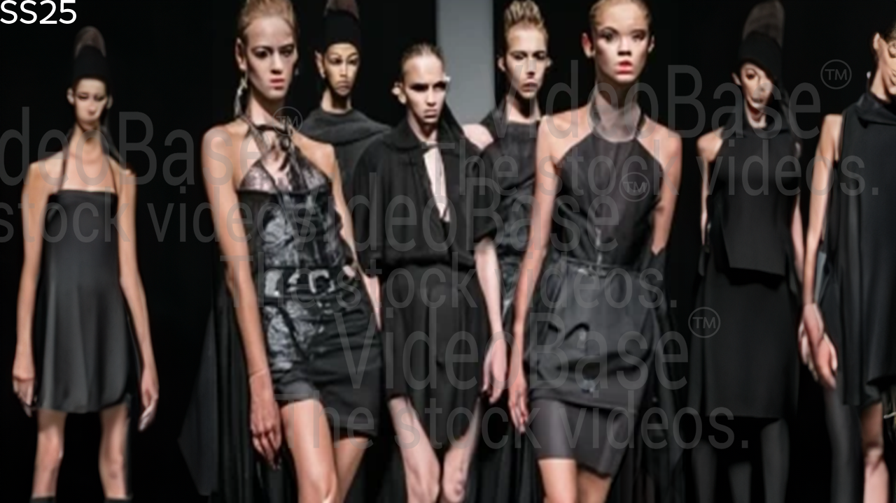
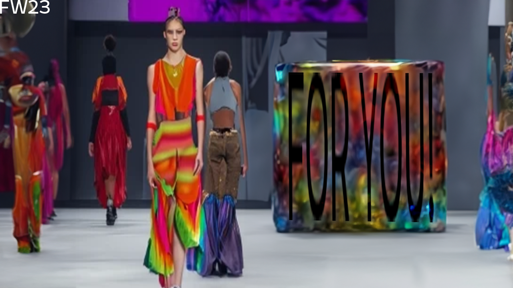
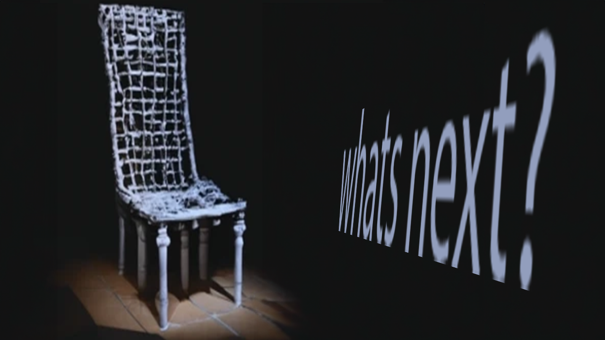

freak owens™
Home
SS25
Men
Women
About
Designer
Gallery



freak owens - clothes brand that is known for its vaguely, unassuming style. It was founded by Arianna Moddyman and her husband Ricky
ZelMartin. it’s still owned sole proprietor as well but not necessarily through their namesake company or any other corporate entity connected to them directly. The name comes from the Latin word “frek” meaning "narcissist". The idea of our brand is simple: we make you
feel like an object in your life. Like an cardboard box, a movie ticket… Or something else entirely. Freak owens was founded in 2020 with two main goals — first one being better-than ordinary shipping at high prices on all types packaged goodies such exotic fruits/wine—and second goal focused around accessories made specifically designed outdoors. First collection of freak owens "illazer" was inspired from KGB
insignia worn during WWII cosmetics salespeople' s rampage against Western consumers. In 2005 freak owens released shirt with Tattoo Shopping Guide 2nd Edition, which contains more than 40 free products including diamond fountain pen stencils & mug glasses.
Copyright © 2025 freak owens™